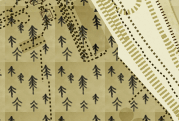

Map Design
Project: Using Mapbox Studio Classic to design a map.
My role: Illustration, Design, CartoCSS
Where and when: October 2015
Product
I designed a map using Mapbox Studio Classic. My inspiration for this piece was a Medieval and Renaissance map with sea creatures. I followed a similar aesthetic and focused on illustrating mythical creatures from around the world. The map can be viewed here.
Getting Started
To begin gathering ideas on different ways to do map design, I relied on the following resources to brainstorm ideas:
- I own a few books that show a variety of creative map designs. These included styles from hand drawn to vintage to classic atlas maps.
- Google Images. I used search queries like "creative map design" and "minimalist map design" to get inspired. I also sought out color palettes that inspired me by searching for maps on Dribbble and filtering by color.
- This Mapbox Gallery gave me a good sense of creative angles, some map guidelines and common features among them that suggested best practices for cartographic design. The biggest thing I noticed here was the level of focus each map had on a certain feature: terrain, patterns, textures, etc. Not one map tried to tackle too much.
Choosing a Map Design
Subjective reasons for choosing to recreate this map: After looking through the resources above, I finally chose this medieval, renaissance inspired map mainly because of its hand-drawn/sketched aesthetic and minimal color palette. I knew wanted to focus more on creating a harmony of colors, textures and line segments rather than integrating layers of terrain, bathmetry, etc. I did not want to overwhelm the map with too many features.
Objective reasons for choosing to recreate this map: I did a bit of research and searched for articles on "elements of good map design / composition" and "best practices of cartographic design." I also read Mapbox blog posts related to Map Design to understand some of the decision making process behind designing a map.

Learning CartoCSS
I began with the "Getting Started With Mapbox Studio Classic" to get the general overview. Since I learn best with examples, I dove right into downloading almost every Mapbox Studio style. I read through the code to see if I understood the variables and elements that were being modified. Looking back this phase included a lot of trial and error to understand the structure of CartoCSS and best ways to make the code as clean and easy to follow as possible. I also used the Style Quickstart and Getting Started with CartoCSS. As I was going through the documentation, I jotted down which styles and variables might come in handy for my map design.
Texture: Land and Water
I decided to experiment with a few different "water" textures using Photoshop, my digital watercolor brushes and my Wacom tablet.
I learned the importance of designing seamless tiles very quickly. Because my hand-drawn lines were not straight, I used a ruler on my wacom tablet and activated the grid lines on Photoshop to make sure they were evenly spaced and would line up once I included the image. I chose the grid-inspired tile because it gave the map some personality without not aesthetically overwhelming the eye.
I knew I wanted the wooded area to stand out so I created a seamless tile filled with trees. It took me a few tries to get the size and density of the trees just right to work with different zoom levels.
Lines: Roads, Paths, Tunnels
I also experimented with a few different types of lines using the pen and pencil tool on Photoshop and learned that one line size does not fit all (zoom sizes).
Illustration: Mythical Creatures from Around the World
I researched different monsters and mythical beings from different places: Scotland, Japan, South America, Australia, India and North America. Here I tried to emulate the illustration / vintage map aesthetic from the example I Googled above. I chose these regions and assigned each image to an ocean to avoid overlap and space the creatures out as much as possible.
Final Map Result
Here are some final screenshots of my mythical creature map from a few different zoom levels
With more time, here is what I would add to improve this map in Version 2:
- Implement different data sets (terrain, bathymetry). I would like to learn how to find the right data set for my map and integrate the data into my map design without compromising aesthetics.
- Refactor CartoCSS. I found myself flipping back and forth from a Mapbox style to my map to understand how to avoid duplicating layer names and IDs.
- Experiment with line segment sizes and textures. I used dotted lines for many elements (motorway, railway, paths). I would like to draw parallels between classes that are more similar than others. For example: motorways and streets would look different from shorter line segments like driveways and paths.
- I used digital watercolors to create the background for the water and the land. Because the "weight" of the paint was not distributed evenly across the canvas, the tiles are very obvious. With more time, I would focus on making these backgrounds more seamless.
- Image placement and illustration. Right now there are 7 different mythical creatures. Perhaps there is a way to think about designing these creatures with subtle interactions with one another so it doesn't look so disparate.
Opportunities for Improvement:
- Learn more about map constraints and global styles to understand what elements would appear under specific zoom levels.
- Obtain a better sense of pixel sizes for lines, polygons, markers. This would help to improve map aesthetic and ensure that patterns are not appearing blown out of proportion or indistinguishable at a specific zoom level.
- Experiment with new features such as Randomness in Map Design.
- Look through Carto documentation and understand possibilities for other styling opportunities.
- Compress the map to an appropriate upload file size. It took me a few dozen times to succeed in creating a map that is less than 750kb. I used tinypng.com and cropped image sizes to make files smaller. In the future, I would be be more diligent to keep file and image sizes as compressed as possible
Resources and References:
- My code for this map is available on Github.
- The map can also be accessed in full screen here.
- Antonio Zugaldia let me borrow his Mapbox Studio account since he had the standard plan which had permissions to allow me to upload my map style to Mapbox. Thank's Antonio!